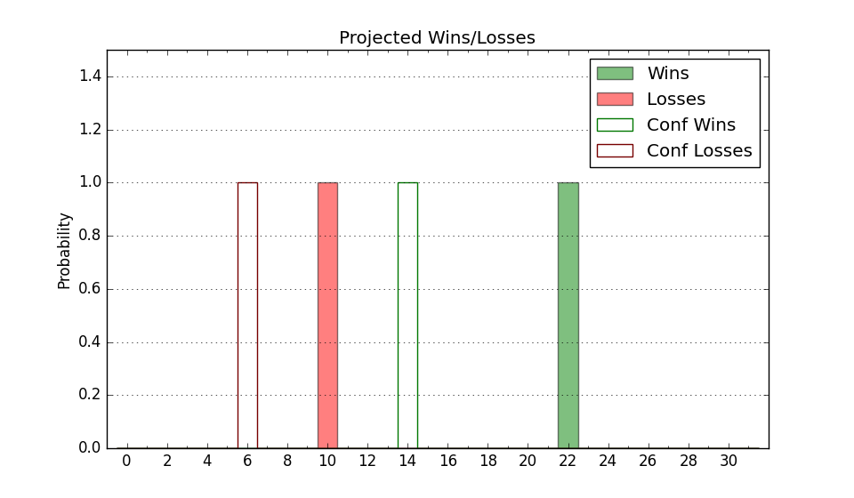

| Home | Game Probabilities | Conferences | Preseason Predictions | Odds Charts | NCAA Tournament |
| City: | Los Angeles, California | |
| Conference: | Pac 12 (2nd)
| |
| Record: | 14-6 (Conf) 22-10 (Overall) | |
| Ratings: | Comp.: 16.4 (44th) Net: 16.4 (44th) Off: 111.7 (48th) Def: 95.2 (49th) SoR: 68.9 (36th) |
| Remaining | ||||||
|---|---|---|---|---|---|---|
| Date | Opponent | Win Prob | Pred. | |||
| Previous | Game Score | |||||
| Date | Opponent | Win Prob | Result | Off | Def | Net |
| 11/7 | Florida Gulf Coast (177) | 90.7% | L 61-74 | -30.0 | -10.7 | -40.6 |
| 11/10 | Alabama St. (348) | 98.6% | W 96-58 | -2.3 | 4.7 | 2.4 |
| 11/15 | Vermont (123) | 85.5% | W 59-57 | -27.9 | 10.0 | -17.9 |
| 11/18 | Mount St. Mary's (276) | 96.1% | W 83-74 | -6.7 | -12.4 | -19.1 |
| 11/23 | (N) BYU (81) | 61.9% | W 82-76 | 10.3 | -3.4 | 6.9 |
| 11/24 | (N) Tennessee (2) | 18.8% | L 66-73 | -2.6 | 6.6 | 3.9 |
| 11/25 | (N) Wisconsin (75) | 60.0% | L 59-64 | -9.0 | -4.8 | -13.8 |
| 11/30 | @California (279) | 88.1% | W 66-51 | -1.8 | 14.1 | 12.3 |
| 12/4 | Oregon St. (216) | 93.1% | W 63-62 | -8.9 | -12.1 | -21.0 |
| 12/7 | Cal St. Fullerton (114) | 83.9% | W 64-50 | -19.3 | 17.9 | -1.4 |
| 12/14 | Long Beach St. (172) | 90.6% | W 88-78 | 4.9 | -9.4 | -4.5 |
| 12/18 | Auburn (37) | 62.2% | W 74-71 | 5.7 | -0.7 | 5.0 |
| 12/21 | (N) Colorado St. (97) | 69.5% | W 73-64 | -7.8 | 14.4 | 6.7 |
| 12/30 | @Washington (112) | 59.8% | W 80-67 | 10.2 | 6.2 | 16.4 |
| 1/1 | @Washington St. (57) | 39.5% | L 71-81 | 3.8 | -24.6 | -20.8 |
| 1/5 | @UCLA (4) | 13.0% | L 58-60 | 3.0 | 9.4 | 12.4 |
| 1/12 | Colorado (64) | 70.9% | W 68-61 | -7.4 | 12.3 | 4.9 |
| 1/14 | Utah (65) | 71.0% | W 71-56 | 11.2 | 7.2 | 18.3 |
| 1/19 | @Arizona (10) | 19.1% | L 66-81 | -15.4 | 4.9 | -10.5 |
| 1/21 | @Arizona St. (71) | 43.5% | W 77-69 | 9.2 | 3.5 | 12.7 |
| 1/26 | UCLA (4) | 33.8% | W 77-64 | 25.1 | 2.2 | 27.3 |
| 2/2 | Washington St. (57) | 68.9% | W 80-70 | 10.1 | -4.7 | 5.4 |
| 2/4 | Washington (112) | 83.5% | W 80-74 | -3.4 | -6.7 | -10.2 |
| 2/9 | @Oregon (38) | 33.1% | L 60-78 | -10.0 | -15.4 | -25.4 |
| 2/11 | @Oregon St. (216) | 80.0% | L 58-61 | -15.8 | -0.1 | -15.9 |
| 2/16 | California (279) | 96.2% | W 97-60 | 22.2 | -0.6 | 21.6 |
| 2/18 | Stanford (82) | 75.2% | W 85-75 | 8.8 | -3.4 | 5.4 |
| 2/23 | @Colorado (64) | 41.7% | W 84-65 | 25.0 | 6.4 | 31.3 |
| 2/25 | @Utah (65) | 41.8% | W 62-49 | 3.3 | 20.8 | 24.2 |
| 3/2 | Arizona (10) | 44.6% | L 81-87 | 1.4 | -14.6 | -13.2 |
| 3/4 | Arizona St. (71) | 72.4% | W 68-65 | -2.6 | -1.1 | -3.7 |
| 3/9 | (N) Arizona St. (71) | 58.7% | L 72-77 | -0.0 | -15.6 | -15.6 |
| Stats & Trends | |||||
|---|---|---|---|---|---|
| Current | Day | Week | Month | Season | |
| Composite | 16.4 | -0.5 | -0.5 | +0.9 | -0.8 |
| Comp Rank | 44 | -3 | -3 | +6 | -10 |
| Net Efficiency | 16.4 | -0.5 | -0.5 | +0.9 | -- |
| Net Rank | 44 | -3 | -3 | +6 | -- |
| Off Efficiency | 111.7 | -0.0 | -0.2 | +1.7 | -- |
| Off Rank | 48 | -2 | -5 | +3 | -- |
| Def Efficiency | 95.2 | -0.4 | -0.4 | -0.8 | -- |
| Def Rank | 49 | -3 | -3 | -- | -- |
| SoS Rank | 54 | +4 | -3 | -8 | -- |
| Exp. Wins | 22.0 | -- | +0.3 | +0.2 | +1.4 |
| Exp. Conf Wins | 14.0 | -- | +0.3 | +0.2 | +1.6 |
| Conf Champ Prob | 0.0 | -- | -- | -5.7 | -16.2 |

| Advanced Stats | ||
|---|---|---|
| Stat | Value | Rank |
| Off Eff FG % | 0.554 | 33 |
| Off Ast Ratio | 0.161 | 67 |
| Off ORB% | 0.298 | 88 |
| Off TO Rate | 0.154 | 166 |
| Off FT Ratio | 0.372 | 45 |
| Def Eff FG % | 0.438 | 9 |
| Def Ast Ratio | 0.132 | 93 |
| Def ORB% | 0.278 | 223 |
| Def TO Rate | 0.151 | 200 |
| Def FT Ratio | 0.288 | 116 |